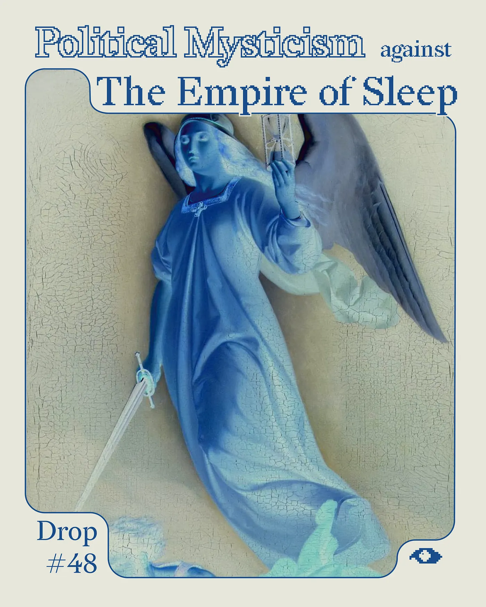
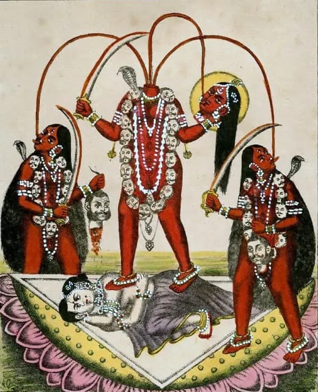
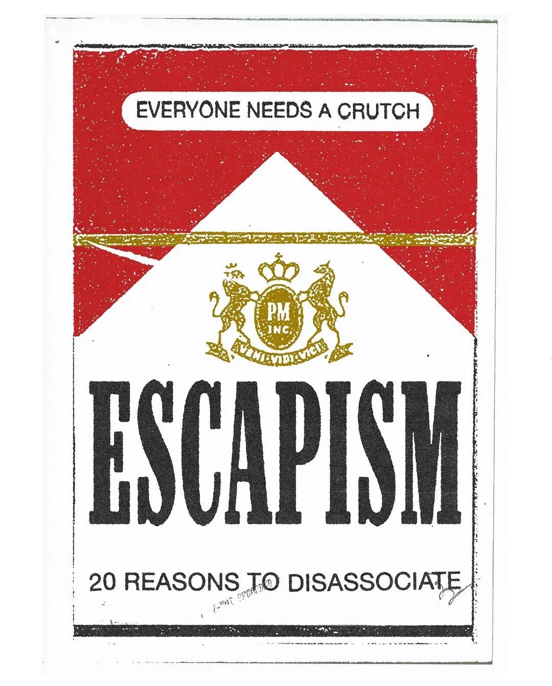
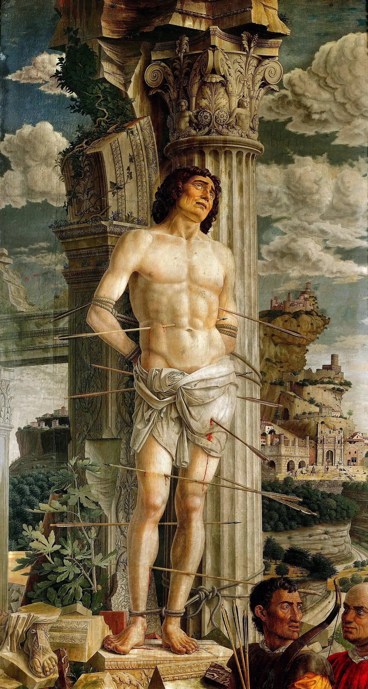
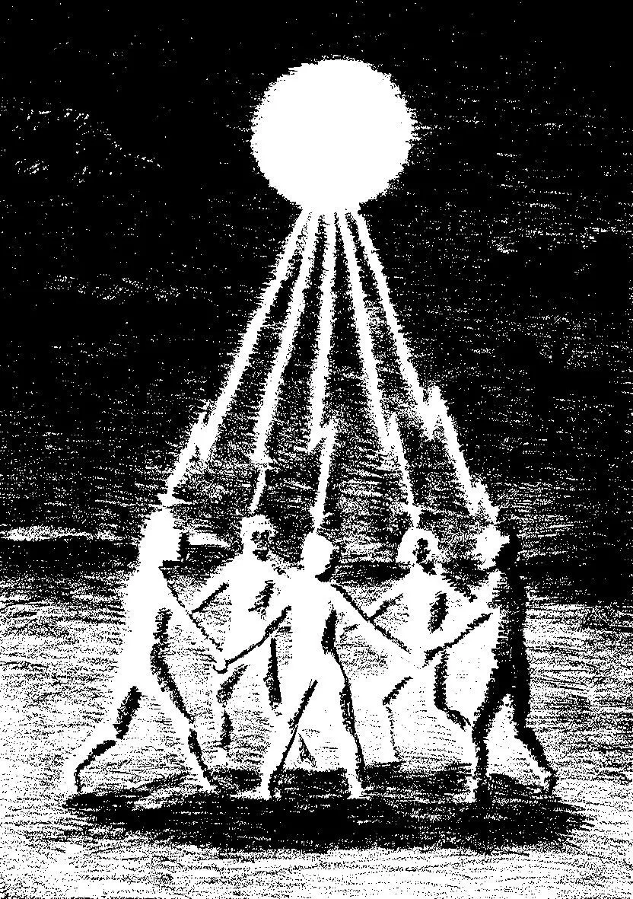
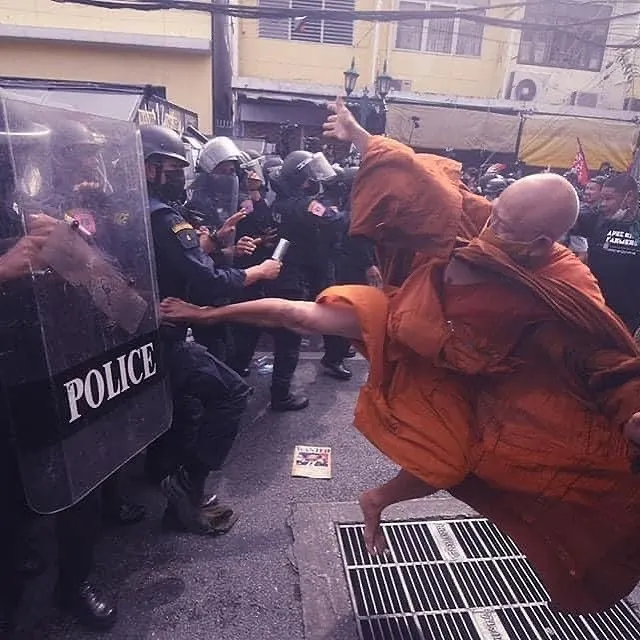

Drop #48 · February 26, 2026 · 20 min read
Hey everyone (▰˘◡˘▰)
Simone Robutti is back on these pages with a new banger of political theology, picking up where he left off with his latest Drop.
Today’s Drop arrives the day after the second anniversary of Aaron Bushnell’s self-immolation in front of the Israeli embassy in Washington. We did not plan it this way, but sometimes the universe knows what it’s doing. Aaron was twenty-five years old. He wore his military uniform. He said he would no longer be complicit in genocide. What he did that day is at the heart of what Simone is trying to map: the sacred logic of a body given to a cause, and what it asks of the rest of us.
The piece moves through archetypes, compressed time horizons, and the spiritual crisis of a left that keeps staging protests with no power to spare. What fills the gap between the activist who burns and the organizer who builds? And what happens when a political ecosystem loses the ability to hold both together?
The Empire of Sleep is real. So is the forest. Grab a drum.
Rest in power Aaron.
Simone Robutti is a knot of flows and occasionally he’s a person too. He engages in Tech Unionism, Algorithmic Accountability, Common Cybernetics, and Democratic Organizational Design. He works as a consultant/trainer on Organization and Process Design. You can find his blog at this link.

Social change is weird. The creation of the New cannot be modeled. If you fully know what you’re doing, it means what you’re doing is not so innovative, or you’re just the executor of somebody else’s vision. You’re just acted upon, rather than acting.
The experience of choosing is not in itself agency: agency is building the choices you haven’t been offered.
“Acting” doesn’t mean building from scratch or doing things alone. It’s not a call for individualism. Often, acting might look like embracing somebody’s project, repeating existing practices in a new context, or altering your life to respond to a different set of incentives. Freedom is not the absence of constraints, but the possibility of choosing your own.
Acting is asking your own question about what has to be done. Nobody can do it for you. Then, the answer doesn’t have to be novel, as long as it’s meaningful to you.
Social change is weird. Our beloved philosopher of organizing, Rodrigo Nunes, inspired by Deleuze, divides social change generated through political action into two categories: molar and molecular.
Molar changes are big: institutions, governments, laws, wars. Molar changes are clear-cut, observable, and explicit. They usually have a point of rupture, or climax, a before and an after.
Molecular changes are more fuzzy: people’s opinions, beliefs, and interpersonal relationships. They change slowly, but continuously.

It may be that molar changes determine molecular ones, that a school reform can instill new beliefs generation after generation. Or it may work the other way around: molecular changes determine molar ones, and the endless discursive work around LGBTQ issues eventually coalesces enough power to write a Gay Marriage bill.
There’s no need to establish a precedence: both levels evolve in parallel and feed into each other. Politics must be played with the full deck of cards. Any reasonable political strategy should be able to articulate needs and goals at both the molar and molecular levels.
Molecular and molar modes of change, I suggest, could be mapped onto two distinct archetypes of political agent: respectively, the activist and the organizer.
Over the last few decades, following the loss of relevance of established parties and historical unions, first in the USA and then slowly throughout the Global North, the organizer regained its dignity as an archetype distinct from that of the activist. It’s considered a big faux pas, in some spaces, to call an organizer “activist”.
If the activist is concerned with language, opinions, positions, identity, influence, symbols, and imagination, the organizer focuses on relationships, processes, scalability, leverage, and governance.
Activist is release, organizer is tension.
Activist is a flyer, organizer is a form. Activist is Instagram, organizer is Excel. Activist is loud, organizer is quiet. Activist is fire, organizer is earth. Activist is sexual, organizer is erotic.
Activist is martyrdom. Organizer is asceticism.
In practice, most activists have to be organizers sometimes, and vice versa, especially within larger organizations. Even if most of your politics happens on Instagram or in street protests, you still need to build a degree of infrastructure and process. You build temporary relations and “moments” that will survive just enough to make your voice heard and create molecular change, but you still have to build. Activists who never organize are just gramophones.
Organizers who never engage with the molecular are equally ineffective: a lot of infrastructure lives in people’s heads, and engaging with the molecular is necessary to catalyze attention, motivation, and commitment. Most humans are not used to collective action, and building power only on the shoulders of those already molecularly mature won’t get far.

Agency comes from a shortening of the time horizon, that is, the span of time you plan for. Given a long enough look-ahead, this is all irrelevant. You can internalize the ephemeral nature of existence, contemplate eternity, and detach yourself from the world. Rookie shit, if you ask me.
Go hard mode: become a Saint within the world. Become a Saint by altering the world.
Choose complicity over dissociation.
If your horizon is a lifetime, you will still be paralyzed. Any meaningful engagement with change can be rejected if you think about your pension, your career, inflation, and retirement. A long time horizon allows you to search in the future for a reason not to act in the present, and you will always find one. Rich people die, too. They sometimes die young and in horrible ways. Once you reach basic financial stability, no amount of money or compliance will give you the control you crave.
Weaponized responsibilities. It’s rational, but it binds you to be an executor, acted upon by the system of incentives designed by somebody else. Radical agency starts by putting your personal interest aside.
But Simone, you’re a union organizer. How can you say that? Isn’t starting or joining a union in the interest of workers? Isn’t tenant organizing in the interest of tenants?
Of course it is: collective action is meant to make our lives better. But more than engaging directly with politics, the rational move seems to be to always let others do it for you, keep working, hide from consequences, and wait to reap the benefits. Everybody thinking like this is how fascists end up shooting people in the streets.
This logic must be broken. The usual attempt goes through arguments about material conditions and systemic effects, but it never addresses the real question: “Why me? Why not somebody else? Why now?”
Shortening the time horizon helps by lightening the burden of consequences. Spending a few hours a week on political work might cost you energy, performance, and maybe a promotion. Sure.
In the meantime, the global order is collapsing, and WW3 is knocking at the door. Business as usual is over, baby. Fascists are fucking with the money now. The Money God is dead again.
If CO2 emissions, soil exhaustion, constant riots, and missiles flying weren’t enough, the last few months of political news might help shorten your time horizon. Thanks, Donald.
This is how the end of an empire looks.
Nobody is in charge. Nobody was ever in charge. Kill the parents in your head: political “adults” today are demented fascists on ketamine or spineless bureaucrats.
Now that your time horizon is maybe a few months long, maybe a couple of years, you are finally free to leave the rails and act in the world. You can be an activist, an organizer, or both.
What happens if the time horizon is compressed further?
Political martyrs have existed long before activism could be even conceivable in the current form.
Here, by “martyrs”, we mean exclusively people who chase martyrdom actively and consciously, rather than unwilling victims of violence.
The act of martyrdom, the final sacrifice of the self in support of a cause, is the conclusion of the activist trajectory. The activist-martyr dissolves in the ultimate act of symbolic defiance against oppressive power: immolating themselves to escape control. I assert my agency over myself by taking away my own life and spending it for what I believe in.
One of the most recent casesis the self-immolation of Aaron Bushnell, an American tech worker and serviceman in the Navy, who set himself on fire shouting “Free Palestine!” and denouncing his complicity in the genocide.
Martyrdom is the construction of a system of meaning in the absence of a time horizon: my whole life finds meaning in the last instant. There’s no aftermath, no future.
Total meaning in the present, in a single act. Every prior moment becomes a build-up to this semantic climax, generating meaning retrospectively. It is no surprise that martyrs who survive by chance, like Saint Sebastian, immediately chase martyrdom again. They didn’t plan for a second season.

Political Martyrdom is inevitably entangled with a specific strategic dysfunction within the far-left: the idea that sacrifice is in itself meaningful. We see it extensively in the blood ritual of many violent street protests, where protestors’ violence has no demand, no goal beyond triggering a response from the police. Long ago, this might have served to highlight the violent nature of police repression, but nowadays nobody doubts that the police exist to repress dissent, whether you think it is a bad thing or not.
Then why do some political niches keep chasing violent confrontation, fully aware they will be met with pepper spray, tear gas, and bullets? The desire for martyrdom is evident, but the dynamic is unsatisfactory: there’s no climactic escalation, no rupture, no closure. The fight ends, some people go to jail, some go to the hospital, and most go home.
Stuck in a loop, chasing the high that will never come again. It’s addictive, the way MDMA can become addictive. Anybody who tried it many times knows that most people have a limited number of ecstatic trips. Maybe 10, maybe more, but at some point it’s not special anymore. You can try to raise the dosage, but it won’t last. It might be good, but it won’t be fantastic. Most people at that point move on with their life, cherishing the memory of cosmic love, of a night with the love of their life, or the surprising discovery that they don’t stutter anymore under the effect. A few get stuck, though: new clubs, higher dosages, stronger substances, always chasing the high. A high that will never come again. They end their spiraling in front of a psychiatrist, commenting teutonically: “C’est fini, le Berghain.”
Martyrdom must have a short time horizon and a clear conclusion. If it becomes routine, it’s simple masochism.
The self-discipline of the effective organizer also stems from a collapse of the time horizon. The work of building power happens day after day, stacking microscopic successes, building tiny pieces of a giant infrastructure. It is viable only if the attention is drawn away from the destination and towards the next step. An urge for closure will make you run a marathon like a sprint race: you will burn out before you can accomplish anything.
If the organizer thinks strategically over a longer time span, they must reduce their time horizon to make the experience bearable. The work is endless, nothing lasts forever, and social entropy dismantles everything built by humankind. Action is possible only if meaning is built by embracing the process, not by achieving the outcome.
The separation of the strategic mind from the acting soul creates a gap full of uncertainty, ambiguity, and horror. Faith, either individual or collective, must fill this gap. Faith is not blind like a delusion, not wishful thinking. It is instead a feedback loop, a continuous test that a success will lead to a bigger success. Every grain of rice you stack is the foundation for the next. Do it long enough and your ego will dissolve.
Practice sharpens the ego, making it pointier, day after day, thinner. At the point of maximum sharpness, the ego is ready to let itself go. The ego dies. The person survives, one with the Community. The Community brings the Practice further, and the loop continues, intensified.
Contrary to spiritual ascetics who explore what dwells within, political ascetics find bliss in the interaction with the outside world, not by violent reshaping like an axe chopping an oak, but through a mellow and consistent pressure, like a gardener nurturing an orchid. Denial of the self, a continuous battle between Will and Temptation, renunciation of personal wealth and power: these are the markers of the organizer-ascetic. Rules, systems, governance, and infrastructure are just an externalization of self-discipline, useful to bind oneself and others into virtuous behavior. be able to wield a greater amount of collective power without relying exclusively on the strength of the individual soul.
If the activist fails by turning martyrdom into masochism, the organizer fails by reducing asceticism to blind faith in the process. The impossibility of achieving certainty in the outcome is not an excuse for sheepish reliance on process. Every political organization is built on a tension between reproducing itself (recruiting, fundraising, governance, etc.) and altering the outside. Every political organization, eventually, loses this tension and either prioritizes reproduction or dies. Very few exceptions exist to this rule, the Catholic Church being one of the most prominent. This loss of tension is the organizer mistaking the process for the outcome. Trust the process, yes, but eventually it has to deliver. How can the organizer know whether they are building a process for the sake of process, or whether they are in a virtuous feedback loop between impact and growth? Ultimately, it’s undecidable.

Any structured organization is a magic circle of Truth and Order. It defines a perimeter, and, within it, a new Order exists. The failure of organizing is the attempt to maintain this barrier indefinitely. Every organization is a dead organization walking. Entropy always prevails. The choice is between being content with an ephemeral bubble of resistance or growing enough to expand the magic circle to your whole world. You will never defeat entropy, but you might defeat minor Gods of Chaos local to our society: Capitalism, Authority, Oppression.
The repetitive and productive impulse of the organizer must be put in dialogue with the climactic expenditure of the activist. One without the other unravels and withers away.
Activist is release, organizer is tension.
A psycho-spiritually healthy political ecosystem finds a constructive relation between power accumulation and expenditure, both on the molecular and molar level. A scalable approach to change feeds the outcome of the expenditure into further power accumulation, avoiding concentration and retention (authoritarianism), but also overspending (ritualized ineffectiveness). A strange feedback loop in the form of a rising spiral.
Power here is power to act, a configuration of material conditions and social relations that enable transformation. Power is the possibility of causing Change to occur in conformity with Will.
But rational production and expenditure of power is not sufficient. The failure of 20th-century unions and parties shows that systems entirely focused on rational production and utilitarian expenditure are unfit for present times. A political ecosystem with a utilitarian drive must incorporate ritual waste of resources and power to produce cohesion, motivation, belonging, and identity.
What we are experiencing today is a widespread repetition of ritual expenditure performed by structures that have no excess of power to spare. They result in disappointing outcomes. They are to the soul what a community feast of watery, unseasoned lentil soup is to the belly. The form is there, such as the festival, the street protest, the parade, but the power is missing. People are attracted by the desire to exceed themselves, to be exalted, but are met with the reality of a power that isn’t there. They return home either with the nostalgia of former power or the frustration of their ineffectiveness.
Progressive politics in the West has lost the ability to fulfill the spiritual needs of the people who want to build change. Despite a long history of marrying progressive or revolutionary causes with spiritual technologies, the excess of rationalism has led to widespread paralysis and apathy. The focus on knowing rather than experiencing, or acting, raised the tolerance for passivity, leaving a minority of rage-driven activists to grapple with the limits of their power, without a system of support that could channel their energy into meaningful martyrdom.
On the other side, a spirited youth with the desire and means to make the world a better place is being co-opted along the way by naive, conservative, techno-optimist narratives: effective altruism, blockchain technologies, Artificial General Intelligence, and so on. An easy and wrong answer to a very legitimate demand. These are often lonely, young men, attracted by the promise of redemption and doing good, then indoctrinated into individualism, technocracy, and authoritarianism. Rather than planning to deprogram them and harnessing this energy for better purposes, the Left shuns these lost souls, pushing them further into the pipeline.
An interesting exception is emerging around new forms of social entrepreneurship and ecologically regenerative finance. Presenting themselves as the builder of a new world within the old, they capture energies and initiative in a way that other forms of politics fail to do. The environment is politically varied and imbued with spiritual pluralism: utopian solarpunks, devotees of Cybernetic Spirituality, followers of Gnostic and New Age cults. Still, they need neither Martyrs nor Ascetics: they live in the New System, and it’s already sunny there.
The relationship with Nature, either as something to fix or something to overcome, seems to drive a return to spirituality. The urgency of the topic, the intrinsic opposition to Modernity that created the problems we are in, and a historical connection between environmentalism and Neo-paganism create a fertile terrain for the reenchantment of politics.
New environmental movements have recognized the necessity for a more holistic approach to the needs of both their members and the public, bringing a new approach to community, belief, and agency. Ranging from a millenaristic approach to a more utopian one, the ecoverse is rich in narratives and practices enticing the soul rather than just convincing the mind.

Putting the physical body at risk, consciously accepting legal consequences, resolute non-violence: these are elements designed to train people into martyrdom. Organizations like XR or Last Generation have systematized and scaled this approach like few others in Europe or the USA.
The first sit-in is a rite of passage, necessary to fully belong to the group. After that, the trajectory is set, the horizon shortens, and bigger risks can be taken. Their current challenge is the realization that such martyrdom risks being meaningless. Non-violence creates change only when your opponent has a conscience, and that’s not the case anymore. Nonetheless, non-violence remains a viable frame to activate people politically.
On the stage, a young woman. Her face is pale and smooth on one side, dark and rotting on the other. Armored in a yellow mantle, addresses an enthralled crowd.
Behind the stage, a towering deer. Six, eight meters tall, silhouetted against the grey sky. Among its antlers, a spider the size of a grain of sand patiently weaves the words coming from the speakers into its web.
Her voice the only sound that can be heard. It plays the ears of the attendants like a drum, at a maddening rhythm: the one befitting our times. The multitude dancing motionless. A collective trance.
Silence. Then cheering.
The woman leaves the stage. A young father points: “Look, son. History is walking in front of you.”
All of this is exemplified by Greta Thunberg, la pucelle de Stockholm. I Imbued with sacred rage, relentless, she leads by example from the front lines. Putting her body at risk daily, she is building for herself a reputation of unwavering commitment to the cause. Having skillfully moved past her role as a face for the harmless environmentalist youth, she’s now following a trajectory that doesn’t make any sense from a utilitarian point of view, and, for sure, doesn’t resemble the cursus honorum of activists who reach such fame.
She embodies Joan of Arc’s purity: a resolute attitude fueled by visions of liberation. Self-assured in the correctness of her mission, she relentlessly pursues an offensive strategy, dragging everybody behind her. Like Joan of Arc defied military hierarchies, gender norms, and ecclesiastical authority, so does Greta, navigating a complicated relationship with power and leadership in current times.
Joan of Arc was the defender of France, fighting for liberation, but also for the divine right of the King of France to rule over the French nation and territory. If the mode is similar, the divine order they fight for is very different. More than anything else, Greta Thunberg represents a return to Earth of Nemesis, the winged Greek Goddess of vengeance and divine retribution. Nemesis Adrasteia, the one who cannot be escaped. Wielding a sword in one hand and an hourglass in the other, she distributed punishments to men who disturbed the harmony of the world, the order of Nature, and who offended the Gods.
I’m not the only one emphasizing the spiritual significance of Greta Thunberg. For instance, Peter Thiel repeatedly pointed at Greta as a harbinger of the apocalypse, the collapse of the World. Which world? His world. Described as a “legionnaire of the Antichrist”, she exemplifies the ultimate threat to the American tech oligarchs: the descent from their thrones of immaterial power into the plane of materiality.
The wealth of the United States was built on the Apocalypse of Abya Yala, but the Wheel of History keeps spinning. Hodie mihi, cras tibi.
Don’t believe Thiel too much, though. He has no love for modernity. He wields the shield of Science and Rationality to garner support from the tech aristocracy, but he’s the first working hard to put an end to Modernity. The competition with Greta is about what will come after: a world of tech warlords, or a new social order built to prevent accumulation and destruction.
Modernity is on its way out, no matter what. Reactionary forces have understood it better than others. They understood that shamans can storm palaces much better than revolutionary militias. They fought the woke with dreams. They contested the dominance of the liberal order on the mind with a spiritual war, for which nobody had defenses. They hallucinated a takeover into reality.
Change must start from psychosis: a disregard for reality as it presents itself. Later, there will be time to integrate your psychosis and avoid turning it into an ineffective delusion. Now, start by opening yourself to the possibility that the order of things might not be as robust as you were told. If victory is impossible and defeat is certain, change the rules of the game. Others keep doing it, why wouldn’t you?
The last frost is the most painful for buds and birds alike. Yet, the spring inevitably follows winter.
Stop waiting for the sun, worshipping ashes in front of a dying hearth.
Wear a coat, grab a drum, and join us in the dark forest. Around the bonfire, we will conjure summer in.
Blood chants of liberation and peace.
Bring the good news to East and West: victory is inevitable.